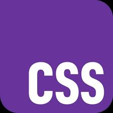

Alur Belajar
-
HTML
HTML adalah bahasa markup yang memungkinkan pengembang untuk menciptakan dan menata elemen-elemen dalam sebuah halaman web. Pada awal perkembangannya, HTML dirancang untuk mendukung teks dan hyperlink sederhana. Namun, dengan cepat HTML berkembang menjadi bahasa yang lebih kompleks dan mendukung elemen grafis, multimedia, dan fitur interaktif lainnya.

-
CSS
CSS adalah bahasa Cascading Style Sheet dan biasanya digunakan untuk mengatur tampilan elemen yang tertulis dalam bahasa markup, seperti HTML. CSS berfungsi untuk memisahkan konten dari tampilan visualnya di situs.
 -
Javascript
JavaScript adalah bahasa pemrograman yang digunakan developer untuk membuat halaman web interaktif sehingga meningkatkan user experience di website. JavaScript digunakan bersama HTML dan CSS untuk membuat website yang dinamis. HTML sebagai struktur dasar situs; CSS mengontrol penyajian, formatting, dan tata letak tiap elemen dalam situs. JavaScript mengontrol setiap pergerakan elemen. Tanpa JavaScript, website akan menjadi sangat statis dan membatasi pengalaman pengguna.

-
Bootstrap
Bootstrap adalah salah satu framework CSS yang fokus pada pengembangan situs web front-end. Di dalamnya mengandung HTML, CSS, dan JavaScript untuk membuat tampilan website yang modern, responsif, dan mobile-friendly.

-
Tailwind CSS
Tailwind adalah sebuah utility-first CSS framework yang memungkinkan pengembang untuk membangun desain yang kompleks dengan mudah. Tidak seperti framework CSS lainnya yang menyediakan komponen siap pakai, Tailwind memberikan utility classes yang dapat digunakan untuk menyesuaikan tampilan elemen HTML dengan cepat.
-
Framework Frontend
Front end frameworks adalah kerangka kerja yang digunakan untuk membangun antarmuka pengguna (User Interface/UI) situs web atau aplikasi. Framework ini mengatur tampilan dan fungsionalitas UI, sehingga memudahkan pengembang dalam membangun aplikasi dengan cepat dan efisien. Dalam framework ini, pengembang dapat mengatur layout, gaya, interaksi, dan responsivitas website atau aplikasi. Dengan begitu, developer tidak perlu memulai dari awal dan menciptakan ulang semua fitur dan komponen yang umum ditemukan pada situs web atau aplikasi, melainkan cukup menggunakan fitur-fitur yang telah tersedia dalam framework. Ada beberapa framework yang populer, diantaranya React JS, Angular JS, dan Vue JS.